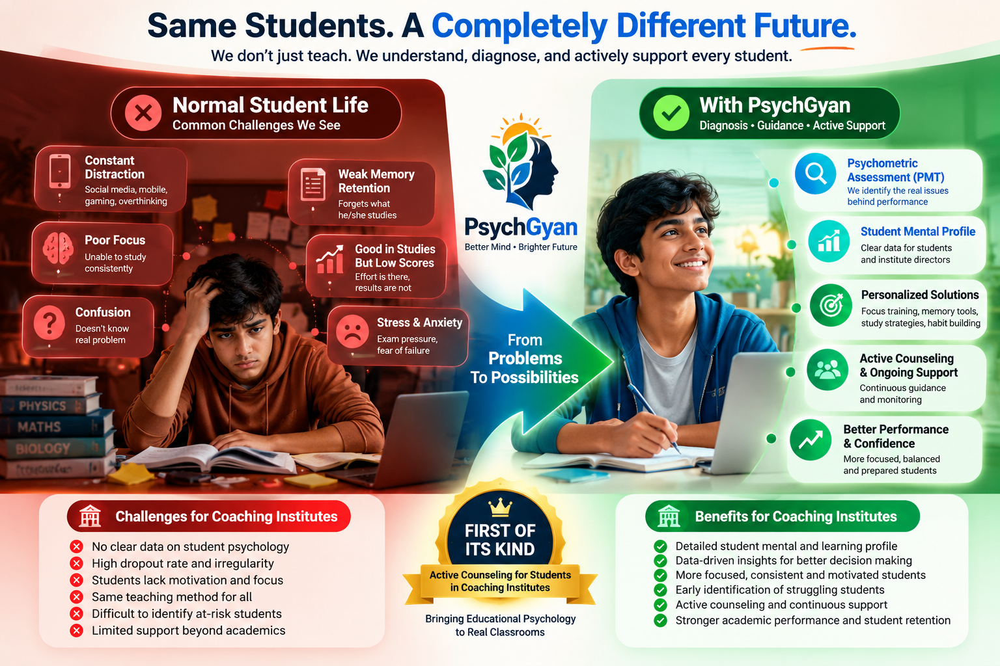
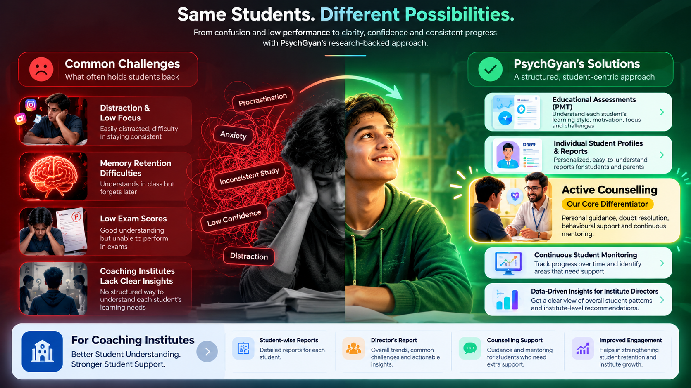

Understand Students Beyond Academic Marks. Empower Real Potential.
Marks capture output, but rarely reveal the study friction, exam pressure, or motivation plateaus holding students back. PsychGyan collaborates with coaching institutes and schools to deliver structured educational assessments and student-development initiatives for Classes 9 to 12.
Educational psychology & student support initiative. Diagnostic assessments are educational tools in structured development, not clinical diagnostic tests.

Rethinking How Educational Institutions Support Students
PsychGyan is an education-support and student-development company. We collaborate with coaching directors, school leaders, and teachers who recognise that academic achievement in high-stakes environments requires more than rigorous lecture delivery.
When bright students struggle in Classes 9 to 12, the underlying obstacle is rarely a lack of intelligence. More often, it stems from unaddressed exam pressure, inefficient study execution, waning motivational stamina, or classroom anxiety. PsychGyan creates structured diagnostic assessments and targeted developmental programmes to help educators support students with clarity and empathy.
For Coaching Institutes and Schools
Both sectors face distinct operational demands. Select your institution type below to review tailored challenges and solutions.
Solving Score Plateaus and Student Dropouts
Managing a competitive coaching centre for JEE, NEET, and Foundation batches brings severe institutional pressures: sudden score plateaus, student burnout, and silent dropouts.
Faculty work tirelessly to deliver rigorous lectures, yet students frequently struggle with home study execution. When test scores dip, traditional responses like increasing test frequency or parental warnings can heighten anxiety without addressing the root cause.
PsychGyan helps coaching owners explore these challenges objectively. By examining student-reported patterns in study execution, stress resilience, and batch dynamics, institutes can intervene constructively before students lose confidence or withdraw.
-
Sudden Score Plateaus
Helping directors understand why capable students stall mid-session despite full lecture attendance.
-
Silent Dropouts & Batch Attrition
Spotting early warning signs of disengagement and fatigue before students abandon preparation.
-
The Home-Study Execution Gap
Uncovering friction in daily time management, procrastination, and retention strategies.
-
Constructive Parent Communication
Replacing high-friction blame with structured insights on how the student can be guided effectively.
Equipping School Leaders & Academic Coordinators
Secondary and senior secondary schools carry the vital responsibility of nurturing well-rounded students while navigating board exam expectations.
Principals, academic coordinators, and teachers need practical methodologies to support emotional resilience and cognitive focus. PsychGyan offers school-tailored developmental workshops and diagnostic assessments that help educators understand what students experience behind their classroom demeanor.
Through structured insights into classroom climate and study habits, school management can create an environment where academic ambition is supported by healthy mental habits.
-
Classroom Climate & Psychological Safety
Assessing whether students feel confident asking clarifying questions without fear of peer judgment.
-
Board Exam Readiness & Stress Buffering
Equipping students with healthy coping mechanisms to manage board and competitive exam stress.
-
Faculty-Student Alignment
Providing coordinators and teachers with actionable insights into batch-level learning approaches.
-
Proactive Guidance Over Punitive Measures
Assisting school counselors and teachers with structured conversational frameworks for student support.
The 3-Stage Service Continuum & Beta Pilot
A structured framework designed to understand student challenges, equip them with actionable methods, and sustain long-term developmental habits.
PMT Understand
In Active DevelopmentA proposed 40-question educational assessment exploring student-reported friction across five key pillars: academic stress, learning approaches, execution, motivation, and classroom environment.
Purpose: Provides institutional heads with batch-level diagnostic clarity on non-academic hurdles.
Seminar Equip
Interactive WorkshopIntensive, practical educational seminars and workshops designed to equip students with tangible tools for daily study execution, distraction management, cognitive focus routines, and exam recovery.
Purpose: Translates diagnostic insights into immediate, actionable student study habits.
Mind Shift 90 Sustain
Proposed 90-Day EngagementA proposed quarter-long developmental framework designed to reinforce student self-regulation, sustain constructive study habits, and provide institutions with longitudinal follow-through.
Purpose: Embeds developmental progress into regular institutional rhythm over 90 days.
A Compact Trial Connected to Mind Shift 90
The 14-Day Beta Programme is designed as an accessible evaluation pathway for coaching institutes and schools. Rather than committing immediately to a full 90-day engagement, institutes can test core workshop formats and gauge student reception within a focused two-week window.
* Programme Notice: Specific curriculum modules, session dates, institutional eligibility criteria, and pilot availability are currently being finalized with early institutional partners.
Interactive Explorer: The 5 PMT Pillars
Click any pillar below to inspect its core diagnostic scope and educational focus areas:
Pillar 01: Academic Stress & Exam Resilience
Explores test anxiety patterns, psychological recovery following unsatisfactory test results, and cognitive stamina during extended exam preparation. Helps directors identify when student performance dips are caused by stress rather than lack of subject knowledge.
How Institutions Collaborate with PsychGyan
A clear, respectful 4-step partnership journey built to integrate seamlessly into your academic calendar.
Institutional Dialogue
Exploratory consultation with coaching directors or principals to map batch schedules, target cohorts, and current student challenges.
Diagnostic Assessment Pilot
Administration of the 40-question PMT pilot across designated Classes 9 to 12 batches, requiring minimal disruption to lecture hours.
Leadership Synthesis & Debrief
Director debrief presenting aggregated, batch-level patterns in student stress, execution hurdles, and motivational stamina.
Seminar Equip & Habit Sustain
Conducting action-oriented student workshops and structuring follow-through routines via the 14-Day Beta or Mind Shift 90.
Why Educational Institutions Partner with PsychGyan
The intended institutional benefits of integrating student-development insights into your academic ecosystem.
Structured Visibility & Actionable Tools
Moving beyond subjective guesswork. Institutes gain structured, batch-level visibility into the exact learning friction points reported by students, alongside practical workshops that equip students with daily execution routines.
Constructive Dialogue & Mentoring Blueprint
Facilitating grounded, objective dialogue between institute leadership, teachers, students, and parents centered around constructive problem-solving and timely pastoral interventions.
Active Counselling by PsychGyan: From Confusion to Clarity
Going beyond classroom teaching through student-centred assessment, personalised guidance, and ongoing support.

Trusted Conversations: Testimonials from Educational Leaders
Perspectives on bringing educational psychology and student-development initiatives into learning environments.
"Understanding the emotional demands and self-study execution of students in Classes 11 and 12 is essential. PsychGyan brings a much-needed structured focus to student resilience alongside regular academic coaching."
"Subject knowledge alone does not guarantee success if students cannot manage test pressure or study consistency. The PMT assessment framework addresses the real learning friction students experience."
"Competitive exam preparation requires sustained motivation over many months. PsychGyan provides institutes with structured tools to identify student demotivation early and intervene constructively."
"Mental stamina, discipline, and positive batch morale are foundational for students facing competitive selections. PsychGyan's student-development approach complements institutional rigor."
For Students and Parents
Navigating competitive academic years with clarity, respect, and mutual understanding.
You Are More Than Your Current Test Score
Preparing for board exams and competitive entrance tests can feel isolating. When concentration slips or test results fall short of expectations, it is easy to assume that you are not capable enough.
PsychGyan helps you recognise that study hurdles, test fatigue, and procrastination are solvable execution challenges, not character flaws. Through structured methods, you learn how to manage exam stress, structure independent study sessions, and regain confidence in your learning journey.
Supporting Your Child Beyond Marks
As a parent, watching your child navigate intense academic pressure is difficult. You want to offer support, but conversations about marks can unintentionally trigger tension or withdrawal.
PsychGyan encourages a more informed perspective on your child's educational progress. By understanding the cognitive and emotional demands of Classes 9 to 12, parents can replace high-stress pressure with constructive encouragement, building a home environment where academic effort is sustained and respected.
Frequently Asked Questions
Essential clarity on our methodology, data privacy, and institutional collaboration.
No. PMT is strictly an educational diagnostic framework exploring student-reported learning approaches, study habits, academic stress, and classroom climate. It is not a clinical psychological test, psychiatric evaluation, or medical diagnostic tool.
The assessment is specifically engineered to respect intensive lecture timetables. The 40-question pilot typically requires under 45 minutes of student time and can be administered during non-lecture hours or weekend batches without disrupting core syllabus completion.
PsychGyan focuses primarily on students in Classes 9 to 12 across competitive coaching institutes (JEE, NEET, Foundation) and senior secondary schools (CBSE, ICSE, and State Boards).
Student privacy is a core ethical principle. No individual student assessment records are stored, hosted, or collected on this public website. Institutional reporting is aggregated at the batch level to help educators spot trends while protecting individual student dignity.
The 14-Day Beta Programme serves as an accessible evaluation on-ramp. Rather than committing to a full 90-day engagement upfront, directors can observe student engagement and trial workshop formats within a focused two-week window before planning long-term adoption.
You can initiate a discussion by completing the institutional inquiry form below or contacting us through our registered institutional domain at psychgyan.in.
Partner with PsychGyan
Direct institutional dialogue for coaching directors, school leaders, and academic coordinators.